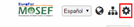
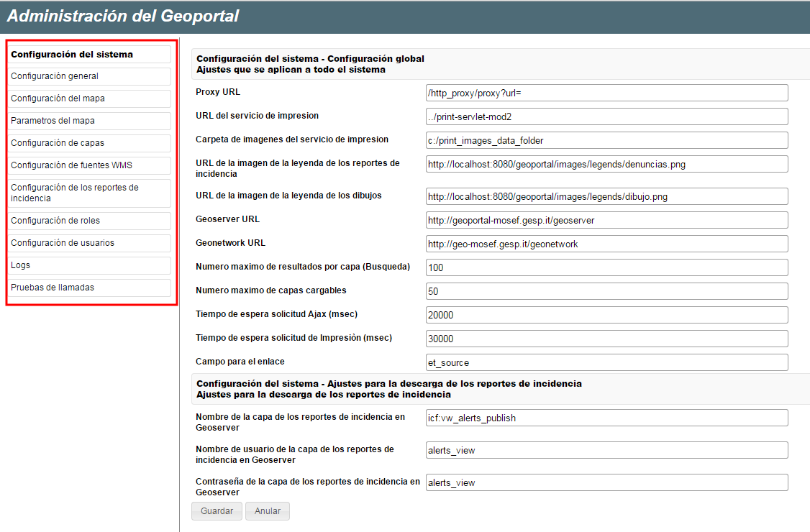

La aplicación Panel de Administración permite el manejo de todos los componentes, usuarios y parámetros de configuración del GeoPortal.
Para acceder al Panel de Administración del Geoportal, el usuario tiene que ser autenticado y tener los permisos necesarios. Una vez insertada correctamente la contraseña, se visualiza el relativo botón, presente en el grupo de herramientas Accesibilidad al Sistema (véase § 2.4.1)

Boton Panel de administración del sistema
A través del Panel de Administración, los usuarios autorizados pueden manejar parámetros de configuración del Geoportal como:
El menú en la parte izquierda de la página permite activare la sección de configuración correspondiente a la voz seleccionada.
